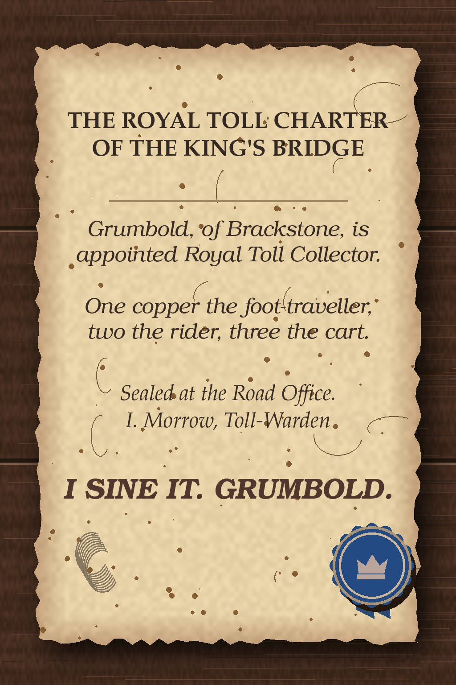

By the authority of the High King’s Road Office, under the Great Road Charters.
Let it be known that GRUMBOLD, of Brackstone, is appointed Royal Toll Collector at the King’s Bridge, to take the lawful toll of the bridge (one copper the foot-traveller, two the rider, three the cart) and to remit the Crown’s share each month entire.
He shall keep true ledgers, charge no traveller more than the lawful toll, and keep the crossing open in all weathers.
Sealed at the Road Office. — I. Morrow, Toll-Warden
(Underneath, in enormous careful letters: “I SINE IT. GRUMBOLD. I AM VERY GOOD AT SUMS.”)